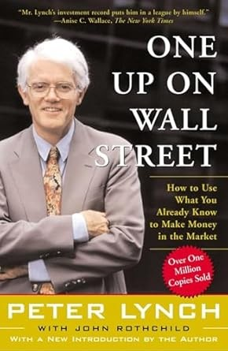

1977年，三十三岁的彼得·林奇（Peter Lynch）接手富达麦哲伦基金（Fidelity Magellan Fund），当时基金资产约1800万美元。到1990年退休时，规模已达到约140亿美元；十三年间年均回报率约29.2%。在这段任期尚未结束的1989年，林奇与财经作家约翰·罗斯柴尔德（John Rothchild）合作出版《One Up On Wall Street: How To Use What You Already Know To Make Money In The Market》。西蒙与舒斯特（Simon & Schuster）出版的这本书面向个人投资者，中文版以《彼得·林奇的成功投资》为名，由机械工业出版社出版，刘建位、徐晓杰翻译。
全书从一个看似反常的判断出发：个人投资者不必在专业机构设定的赛道上与它们比拼消息速度，而可以利用工作与消费中的“实地信息”。医生可能比分析师更早注意到某种药品的使用变化，商场员工可能先看到某个品牌的客流，消费者也能发现门店突然排起长队。林奇写到妻子卡罗琳（Carolyn）在杂货店发现L’eggs连裤袜，由这条消费线索研究生产商Hanes；这类观察发生在分析师报告之前。不过，他没有把观察简化成“喜欢产品就买股票”。生活经验只负责提供候选对象，投资决定还要经过盈利、负债、现金、库存、竞争格局和估值检查。书中要求投资者为每家公司准备一段约两分钟的“故事”：公司为什么能增长、增长处于哪个阶段、什么事实会证明原判断错误。说不清故事，通常意味着持有理由只是跟风。
为了让研究与预期相匹配，林奇把公司分成六类：缓慢增长型（Slow Growers）、稳定增长型（Stalwarts）、快速增长型（Fast Growers）、周期型（Cyclicals）、困境反转型（Turnarounds）和隐蔽资产型（Asset Plays）。稳定增长企业不该按快速增长企业的幅度期待；汽车、钢铁等周期股的盈利高点可能恰好意味着周期临近转折；困境反转股的关键是资产负债表能否撑过危机；隐蔽资产股则要查明土地、现金、子公司或自然资源是否被市场漏算。林奇尤其重视快速增长但尚未饱和的企业，同时用市盈率与盈利增长率的关系检查价格。研究清单还会因类型改变：零售企业要算同店销售和扩店空间，制造商要看库存，受监管行业要查规则，任何公司都要确认债务期限与现金缓冲。他创造并推广“十倍股”（tenbagger）这个说法，但书中列举的成功案例也服务于一条纪律：先给股票归类，再按该类型对应的事实判断买入、持有和卖出。
这套框架最容易被误读的地方，正是“利用你已经知道的东西”。林奇反复把观察与核验连在一起：门店热闹并不能说明公司没有债务，优秀产品也不能保证股价合理，熟悉行业更不能替代阅读年报。他还建议忽略利率预测、市场点位和短期行情，把精力放在可以调查的企业事实上。机构基金经理受基准、持仓规模与职业风险约束，个人投资者没有必须每季调仓或解释短期落后的压力，这才是书名所谓“领先华尔街一步”的制度条件。对个人投资者来说，本书提供的优势并非某条消息，而是一种分工：从日常经验发现候选公司，用六类框架提出正确问题，以财务资料验证故事，再耐心等待企业业绩而不是价格波动给出答案。这个流程也解释了为什么一只十倍股足以抵消多次普通失误，却仍不能成为省略研究的借口。